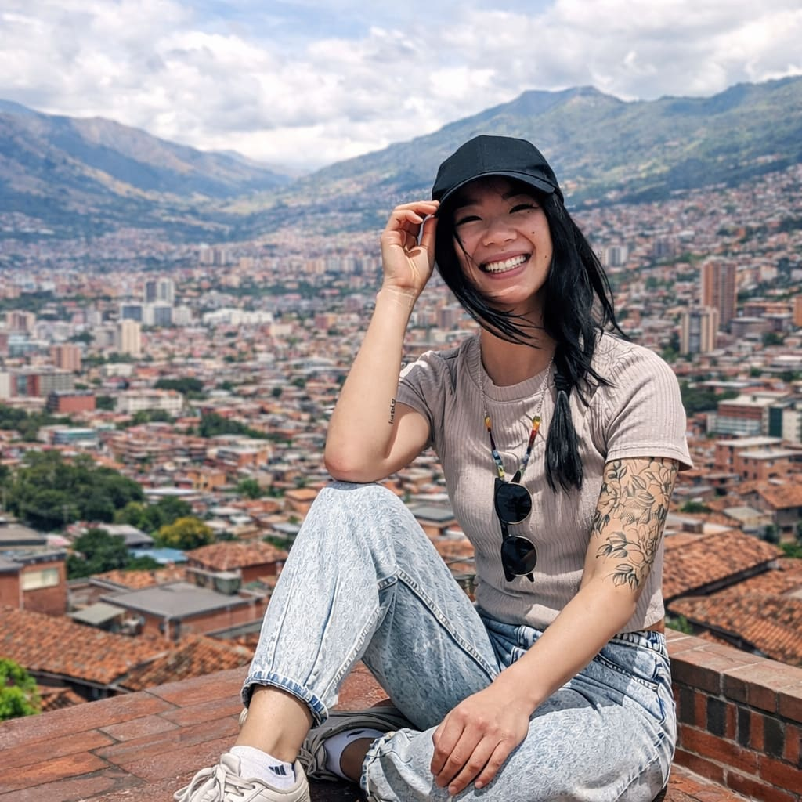
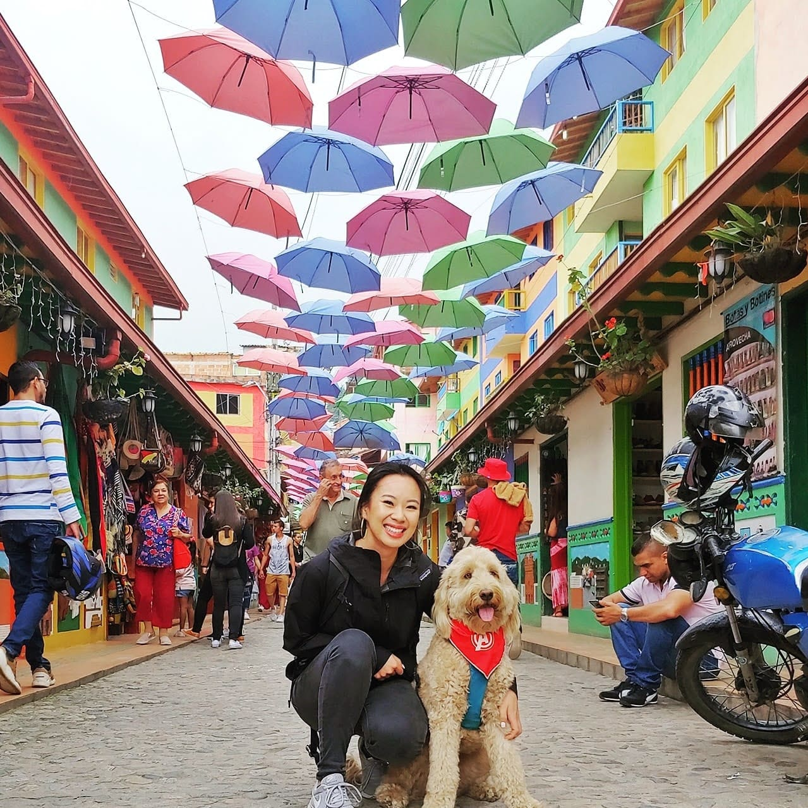
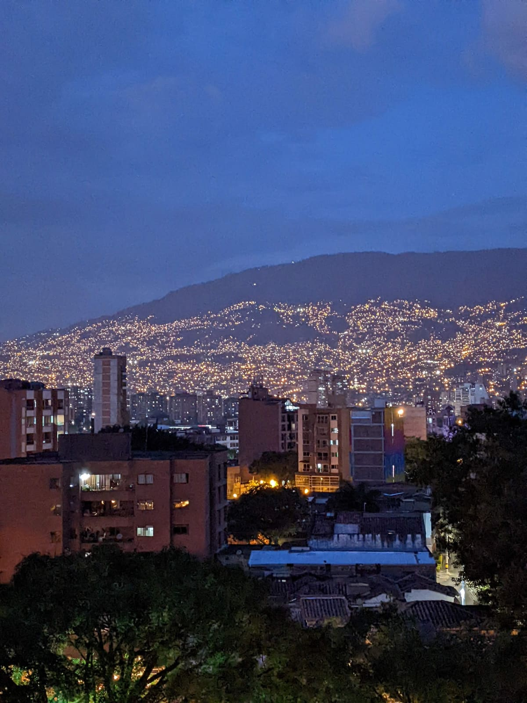
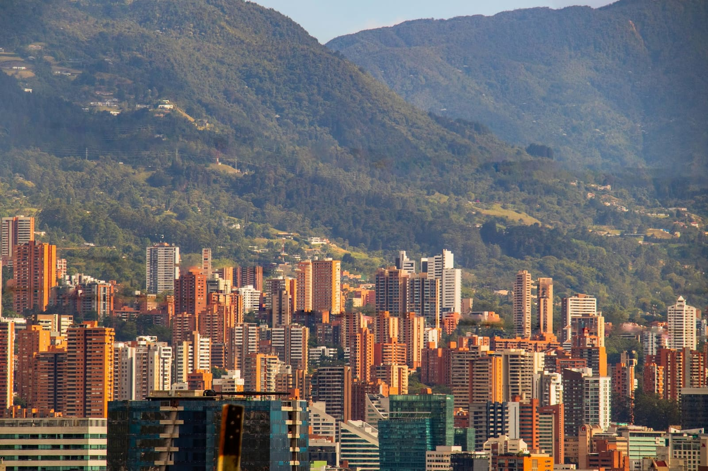
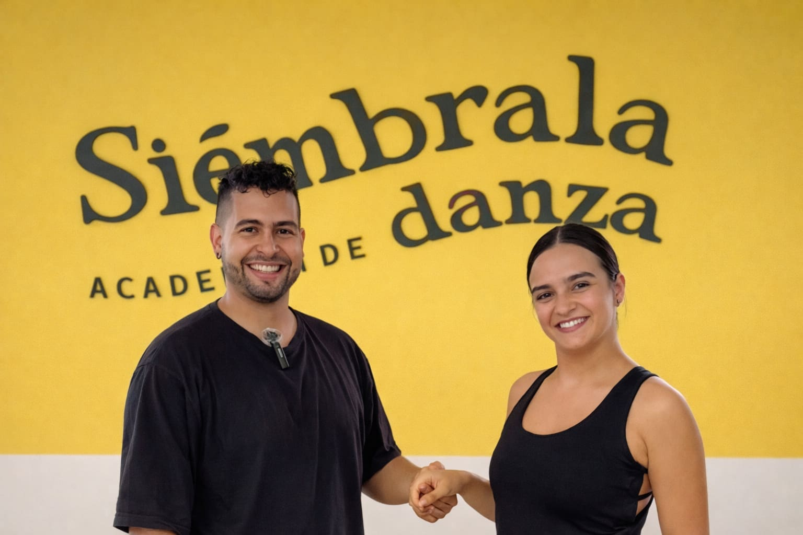

About · Your host
Hi, I’m Nina.
I lived in Medellín for nearly four years, and it’s where my dance journey began. Over time, I became deeply connected to the local dance scene through training with instructors across the city, attending socials, and building real relationships within the community. Eventually, familiar faces, favorite dance floors, and everyday routines made Medellín feel like home.
That matters because this experience wasn’t created from a distance or pieced together through internet research.
It’s built from firsthand experience, trusted local relationships, and a deep understanding of what can make a dance trip feel either overwhelming or truly supportive.
As your host, I’ll be there throughout the week to help guide the journey, bridge language and cultural gaps when needed, and make sure you feel supported from beginning to end. 💛
Nina communicated so many helpful details before the trip about what to expect, and she was always available to answer any and every question during the trip.Dimple, San Francisco Bay Area




Carlos and Aleja at Siémbrala Dance Academy
Colombian partners
The local people who make the week possible
Each immersion is made possible by Colombian dance teachers, local hosts, and businesses. The instructor lineup may vary by trip and by dance style.
Our first salsa immersion in August 2026 was created with Carlos and Aleja of Siémbrala, two local teachers I admire for their talent, professionalism, and care.
Their thoughtful, adaptable instruction helped shape the first week. Future salsa and bachata trips may have different teaching teams, selected for the style and the experience we're building.
I'm grateful for the work we created together, and I'm excited to keep working with talented Colombian instructors and local partners as these trips grow.
Past collaborator:
Siémbrala Dance Academy ↗
At the heart of this experience is a mission I care deeply about
My mission is to uplift Medellín's dance community through opportunity and fair compensation, while inspiring a deeper appreciation for Colombian culture through dance and human connection.